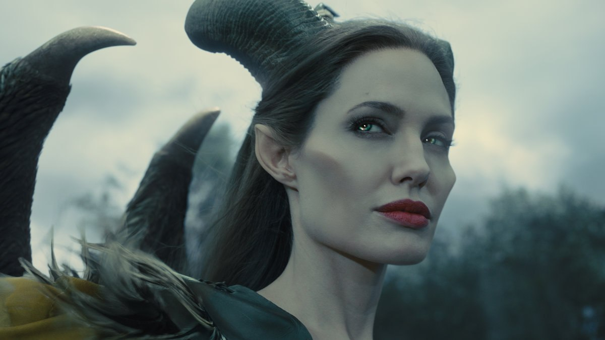

About this Bitch
A fictional character who appears as the main antagonist in Walt Disney Productions' 16th animated feature film, Sleeping Beauty (1959). She is represented as an evil fairy and the self-proclaimed "Mistress of All Evil" who, after not being invited to a christening, curses the infant Princess Aurora to "prick her finger on the spindle of a spinning wheel and die" before the sun sets on Aurora's sixteenth birthday.
Maleficent is based on the evil fairy godmother character in Charles Perrault's fairy tale Sleeping Beauty, as well as the villainess who appears in the Brothers Grimm's retelling of the story, Little Briar Rose.
Maleficent and her friends
Maleficent's Characteristics
- She has horns
- She wears all black
- She hates the pretty girls
- Walks with a cane
Maleficent's Friends
Maleficent doesn't really have any friends. Just other OG villains. Keep your enemies close. Ursula, Cruella DeVil, Queen Grimhilde